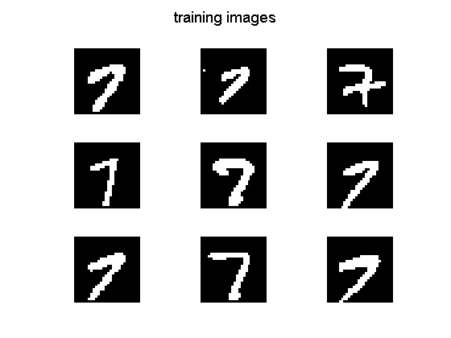
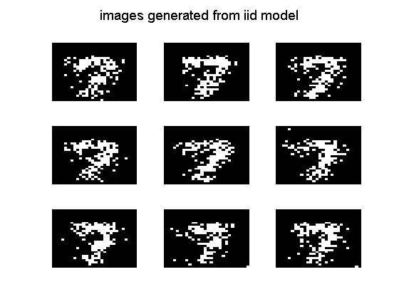
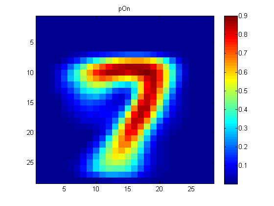

Run NaiveBayes on the mnist data
loadData('mnistAll')
seed = 0; rand('state', seed); randn('state', seed);
digit = 7;
ndx = find(mnist.train_labels==digit);
Ntrain = 1000;
ndx = ndx(1:Ntrain);
Xtrain = double(reshape(mnist.train_images(:,:,ndx), [28*28 length(ndx)]))';
m = mean(Xtrain(:));
Xtrain = double(Xtrain>m);
figure(1);clf
for i=1:9
subplot(3,3,i)
img = reshape(Xtrain(i,:), [28 28]);
imagesc(img); colormap(gray); axis off; axis image
end
suptitle('training images')
printPmtkFigure('mnist7train');
Non = sum( Xtrain==1, 1);
Noff = sum( Xtrain==0, 1);
a = 1; b = 1;
pOn = (Non + a) ./ (Non + Noff + a + b);
Nsim = 9;
Npixels = size(Xtrain,2);
Xsamp = rand(Nsim, Npixels) < repmat(pOn, Nsim, 1);
figure(2);clf
for i=1:9
subplot(3,3,i)
img = reshape(Xsamp(i,:), [28 28]);
imagesc(img); colormap(gray); axis off
end
suptitle('images generated from iid model')
printPmtkFigure('mnist7genIID');
figure(3);clf
imagesc(reshape(pOn,[28 28])); colormap(jet)
title('pOn'); colorbar
printPmtkFigure('mnist7HeatmapIID');
  